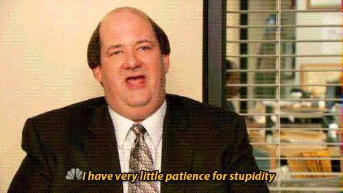

JPEGs: Best when the image is high resolution/contrast
PNGs: Best when the image is made up of few flat colors
PNGs are also usually the best choice when working with
opaque images
GIFs: Well...

GIFs are also good for making loading animations/etc.
Save Images in the Right Dimensions
Images dimensions are distorted if the height/width
attributes are provided that way
Save Images in the Right Resolution
Images should be in a resolution that is sharp enough
to obtain the desired appearance while small enough to
not require the user to have to download an overly large
image file
Vector images can be enlarged without losing image quality
or creating a large image file to download, however most
vector image formats should be converted to a bitmap image
format and then uploaded (SVG is an upcoming method for
displaying vector images on the web)